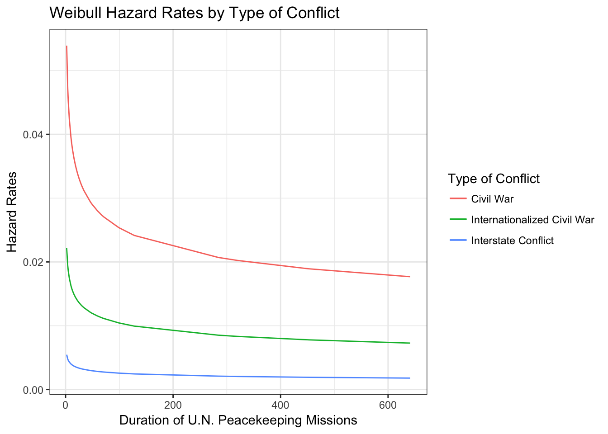

3 Parametric Models for Single-Spell Duration Data
This chapter makes use of two different datasets: data on the duration of UN peacekeeping operations from 1948-2001 (originally used in Green et al. 1998) and data on the duration of European cabinet governments from King et al. 1990. Each of the figures and tables are replicated in both R and Stata. Let’s start with the UN data in R and Stata first, and then move on to the cabinet data in R and Stata.
3.1 UN Data in R
Let’s load the packages we will need and the UN dataset. Be sure to set the working directory to
#---- Packages
library(foreign)
library(survival)
library(survminer)
library(flexsurv)
library(texreg)
library(ggplot2)
library(SurvRegCensCov)#-------Dataset
un <- read.dta("~/Dropbox/github/liwu-gan.github.io/dta/UNFINAL.dta")We create the survival object for our dependent variable, using the syntax Surv(time, event).
#--------Data prepation
dv <- Surv(un$'_t', un$'_d')3.1.1 Table 3.1
First we run the exponential and Weibull A.F.T models
# Exponential Model
exp_mod <- survreg(dv ~ civil + interst, data = un, dist = "exp")
# Weibull A.F.T
weib_mod <- survreg(dv ~ civil + interst, data = un, dist = "weib")The Weibull Prop. Hazards model is a little more involved to run, because the default in R is the accelerated failure time (A.F.T.) parameterization. To convert the Weibull A.F.T. to Prop. Hazards, we will use the ConvertWeibull function. Because this function does not calculate the intercept or standard errors, however, we will first have to create an intercept term manually by entering a vector of 1s in the dataset. We will then enter the intercept term as a covariate in the model.
intercept <- rep(1,58)
un$intercept <- interceptWe run the Weibull A.F.T models with this intercept term. The ConvertWeibull function will drop the first term so we have to two identical models with the terms ordered differently to get the conversions for all the variables.
weib_mod1 <- survreg(dv ~ 0 + civil + intercept + interst, data = un)
weib_mod2 <- survreg(dv ~ 0 + intercept + civil + interst, data = un)
weib_mod1_ph <- ConvertWeibull(weib_mod1)
weib_mod2_ph <- ConvertWeibull(weib_mod2)We can extract the coefficients and standard errors from these two models, and delete the redundant rows.
#Extract the coefficients and standard errors
weib_ph <- rbind(weib_mod1_ph$vars, weib_mod2_ph$vars)
# Delete rows that are redundant/unnecessary
weib_ph <- weib_ph[-c(1,2,5,8),]
weib_ph <- weib_ph[c("intercept", "civil", "interst", "gamma"),]
weib_ph## Estimate SE
## intercept -3.4599094 0.49528585
## civil 0.8879243 0.38320176
## interst -1.4014415 0.51178181
## gamma 0.8068950 0.09988463| Exponential Model | Weibull A.F.T. | Weibull Prop. Hazards | ||
|---|---|---|---|---|
| Constant | 4.35 (0.21) | 4.29 (0.27) | -3.46 (0.50) | |
| Civil War | -1.17 (0.36) | -1.10 (0.45) | 0.89 (0.38) | |
| Interstate Conflict | 1.64 (0.50) | 1.74 (0.62) | -1.40 (0.51) | |
| Shape Parameter | 1.00 | 1.24 | 0.81 | |
| Log Likelihood | -202.85 | -201.15 | -201.15 | |
| N | 54 | 54 | 54 | |
3.1.2 Figure 3.1
# Using the Weibull A.F.T. model we ran earlier, we first calculate lambda for each conflict type, using the fact that lambda = exp(-beta'x)
lambda_civil = unname(exp(-(weib_mod$coef[1] + weib_mod$coef[2])))
lambda_interst = unname(exp(-(weib_mod$coef[1] + weib_mod$coef[3])))
lambda_icw <- unname(exp(-(weib_mod$coef[1])))# We can generate the hazard rate for each covariate profile, knowing that h(t) =
# lambda * p * (lambda * t)^(p-1)
p <- 1/weib_mod$scale
t <- un$'_t'
hazard_civil <- lambda_civil * p * (lambda_civil * t)^(p-1)
hazard_interstate <- lambda_interst * p * (lambda_interst * t)^(p-1)
hazard_icw <- lambda_icw * p * (lambda_icw * t)^(p-1)#Plot hazard rates
ggplot(data = un, aes(x = t)) +
#geom_point(aes(y = hazard_civil)) +
geom_line(aes(y = hazard_civil, colour = "Civil War")) +
#geom_point(aes(y = hazard_interstate)) +
geom_line(aes(y = hazard_interstate, colour = "Interstate Conflict")) +
#geom_point(aes(y = hazard_icw)) +
geom_line(aes(y = hazard_icw, colour = "Internationalized Civil War")) +
theme_bw() +
ylab(label = "Hazard Rates") + xlab("Duration of U.N. Peacekeeping Missions") +
labs(colour = "Type of Conflict") +
ggtitle("Weibull Hazard Rates by Type of Conflict")
3.2 UN Data in Stata
Let’s load the dataset.
/* Dataset is UNFINAL.DTA */
use "~/Dropbox/github/liwu-gan.github.io/dta/UNFINAL.dta"3.2.1 Table 3.1
We can estimate and store each of the following models: exponential, Weibull A.F.T., and Weibull Prop. Hazards.
eststo clear
* Exponential model
eststo: streg civil interst, dist(exp) time
* Weibull model using accelerated failure time
eststo: streg civil interst, dist(weib) nohr
* Weibull model using proportional hazards
eststo: streg civil interst, dist(weib) time Now we can generate the regression table for the three models.
* Reset working directory to collect following output
cd ~/Dropbox/event_history/rmd
* Generate regression table output
esttab using ch3_exp_weib.html, replace ///
coeflabel( _t:civil "Civil War" _t:interst "Interstate Conflict" ///
_t:_cons "Constant") ///
title(Weibull Model of U.N. Peacekeeping Missions) ///
mtitles("Exponential Model" "Weibull A.F.T." "Weibull Prop. Hazards") ///
eqlabels("", none) ///
b(2) se(2) nostar ///
stats(ll N, label("Log-Likelihood" "<em>N</em>") fmt(2 0)) 3.2.2 Figure 3.1
We generate hazard rates for each conflict type from the Weibull P.H. model.
*Weibull Model with P.H. Parameterization
streg civil interst, dist(weib) time
* First, note that lambda=exp(-beta'x). We can compute lambda for each conflict type:
gen lambda_civil=exp(-(_b[_cons]+_b[civil]))
gen lambda_interstate=exp(-(_b[_cons]+_b[interst]))
gen lambda_icw=exp(-(_b[_cons]))
* Second, note that h(t)=lambda*p*(lambda*t)^(p-1). We can generate the hazard rate for each covariate profile:
gen haz_civil=lambda_civil*e(aux_p)*(lambda_civil*duration)^(e(aux_p)-1)
gen haz_interstate=lambda_interstate*e(aux_p)*(lambda_interstate*duration)^(e(aux_p)-1)
gen haz_icw=lambda_icw*e(aux_p)*(lambda_icw*duration)^(e(aux_p)-1)We are now ready to plot the hazard rates.
twoway (line haz_civil duration, sort lpattern(solid) lcolor(red)) (line haz_icw duration, sort lpattern(solid) lcolor(green)) ///
(line haz_interstate duration, sort lpattern(solid) lcolor(blue)), ///
legend(pos(3) col(1) ring(0) ///
lab(1 "Civil War") lab(2 "Internationalized Civil War") lab(3 "Interstate Conflict")) ///
xtitle("Duration of U.N. Peacekeeping Missions") ///
title("Hazard Rates", position (11)) ///
scheme(s2mono) graphregion(color(white) icolor(none)) ///
saving(cabcoxinthaz.gph, replace)
* Export graph as .png file.
graph export UNweibhaz.png, replace3.3 Cabinet Data in R
We begin by opening the cabinet dataset.
#-------Dataset
cabinet <- read.dta("~/Dropbox/github/liwu-gan.github.io/dta/cabinet.dta")We create the survival object for our dependent variable, using the syntax Surv(time, event).
#--------Data prepation
dv <- Surv(cabinet$durat, cabinet$'_d')3.3.1 Table 3.3
We run the Generalized Gamma and Weibull models.
# Generalized Gamma model
gg_mod <- flexsurvreg(dv ~invest + polar + numst + format + postelec + caretakr,
data = cabinet, dist = "gengamma")
# Weibull model
weib_mod <- survreg(dv ~invest + polar + numst + format + postelec + caretakr,
data = cabinet)Let’s compare the results of our models.
| Generalized Gamma | Weibull | ||
|---|---|---|---|
| Constant | 2.96 (0.14) | 2.99 (0.13) | |
| Investiture | -0.30 (0.11) | -0.30 (0.11) | |
| Polarization | -0.02 (0.01) | -0.02 (0.01) | |
| Majority | 0.47 (0.10) | 0.46 (0.10) | |
| Formation | -0.10 (0.03) | -0.10 (0.03) | |
| Post-Election | 0.68 (0.11) | 0.68 (0.10) | |
| Caretaker | -1.33 (0.21) | -1.33 (0.20) | |
| Shape Parameter | 0.79 | 0.77 | |
| Scale Parameter | 0.92 | ||
| Log Likelihood | -1014.55 | -1014.62 | |
| N | 314 | 314 | |
3.4 Cabinet Data in Stata
Let’s load the dataset.
/* Dataset is cabinet.dta */
use "~/Dropbox/github/liwu-gan.github.io/dta/cabinet.dta"3.4.1 Table 3.3
We estimate the generalized gamma and Weibull models, and store the results.
* Estimate generalized gamma model
eststo clear
eststo: streg invest polar numst format postelec caretakr, dist(ggamma) time
* Estimate weibull model
eststo: streg invest polar numst format postelec caretakr, dist(weib) timeWe can generate the results in a table now.
* Reset working directory to collect following output
cd ~/Dropbox/event_history/rmd
* Generate regression table output
esttab using ch3_gg_weib.html, replace ///
coeflabel( _t:invest "Investiture" _t:polar "Polarization" _t:numst "Majority" ///
_t:format "Formation" _t:postelec "Post-Election" _t:caretakr "Caretaker" ///
_t:_cons "Constant") ///
title(Generalized Gamma Model of Cabinet Durations) ///
mtitles("Generalized Gamma" "Weibull") ///
eqlabels("", none) ///
b(2) se(2) nostar ///
stats(ll N, label("Log-Likelihood" "<em>N</em>") fmt(2 0)) nogaps